01
라이브 분위기 카메라
카메라를 들면 에너지 게이지가 차오르고 무드 색이 실시간으로 바뀝니다. 전부 기기 안에서 읽어요. 오토를 켜면 가장 좋은 순간에 무드캡이 알아서 셔터를 누릅니다. 타이밍 재지 않아도 됩니다.
찍기 전에 읽는 기분, 색으로 남는 하루
카메라를 켜는 순간 지금 이 분위기가 화면 위에 색과 숫자로 뜹니다. 셔터를 누르면 차마 입 밖으로 못 낸 속마음을 한 줄로 써 주고, 그 카드를 폰 안에만 쌓아 한 달을 색 팔레트 한 장으로 만들어 줍니다.
App Store에서 받기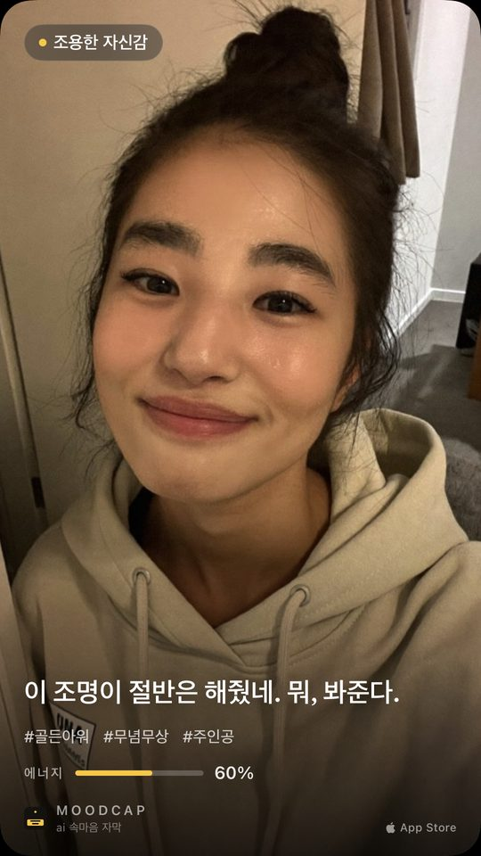
01
카메라를 들면 에너지 게이지가 차오르고 무드 색이 실시간으로 바뀝니다. 전부 기기 안에서 읽어요. 오토를 켜면 가장 좋은 순간에 무드캡이 알아서 셔터를 누릅니다. 타이밍 재지 않아도 됩니다.
02
그다음 AI가 사진 속 분위기를 읽은 속마음 한 줄을 씁니다. 스토리에 바로 올리는 9:16 카드에 오늘의 무드, 해시태그 3개, 에너지 점수까지. 오늘의 나, 반려동물, 그리고 우리 둘의 케미를 점수로.
03
만든 카드는 전부 폰 안 비공개 일기에 저장됩니다. 한 달은 팔레트가 돼요. 하루에 색 한 칸씩, 한 달치 기분이 한 화면에 들어옵니다. 업로드는 없습니다. 타임라인은 폰 밖으로 나가지 않습니다.
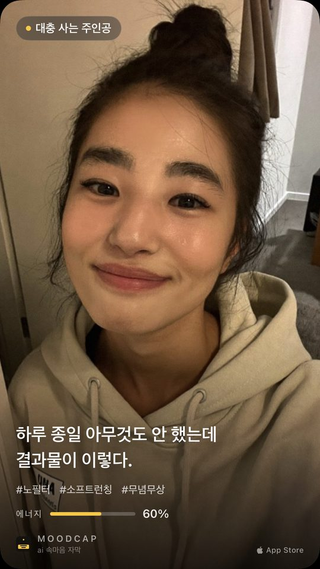
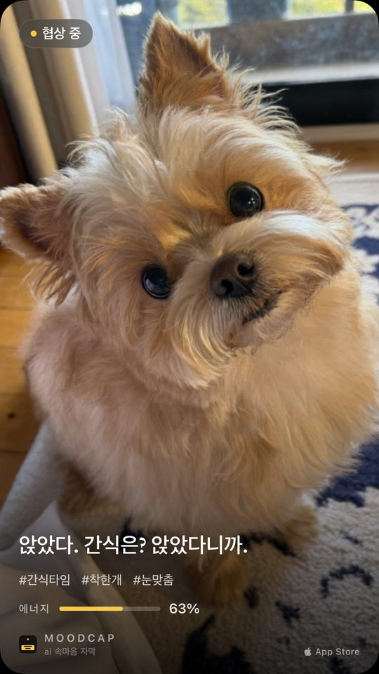
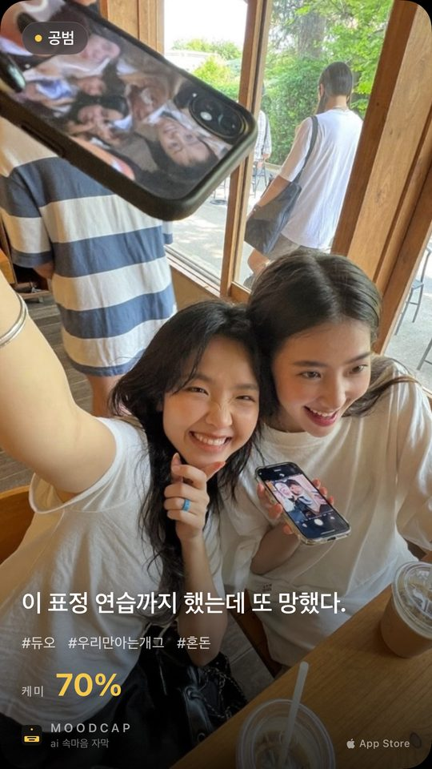
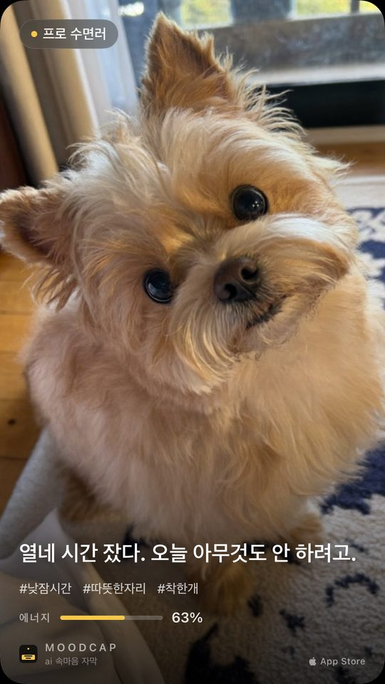
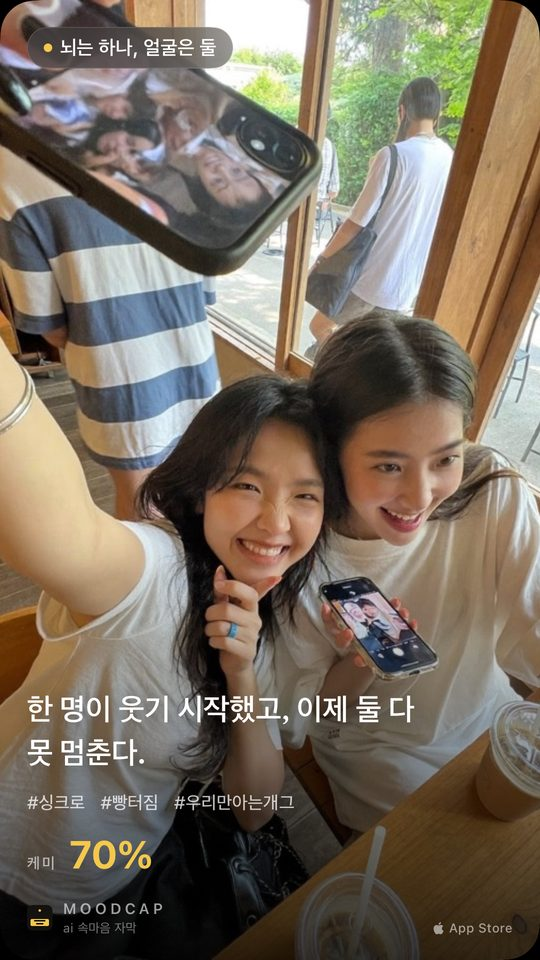
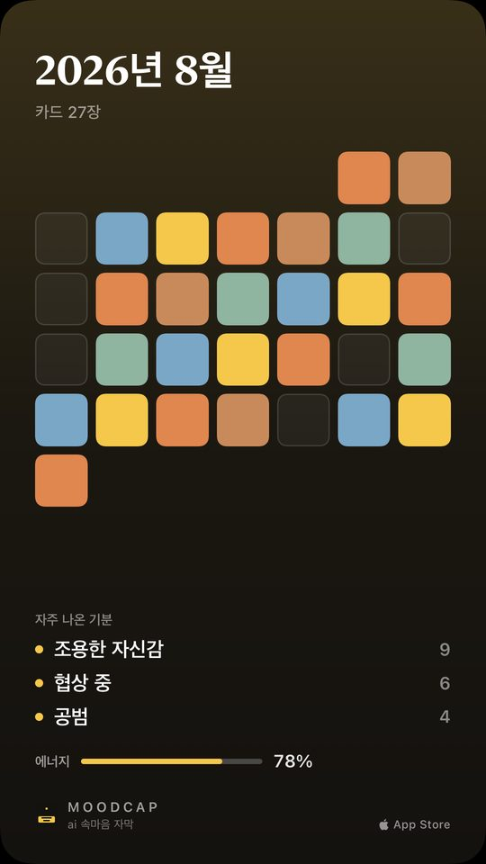
문장이 뻔하지 않으니까요. 대충 묶은 머리, 오늘 세 번째 커피, 뭔가 잘못한 게 분명한 강아지 표정 — 사진에 실제로 있는 것만 읽고 씁니다. 자막 언어는 설정에서 39개 중에 고르고, 기본값은 폰 언어입니다.
라이브 카메라도, 비공개 일기도 그대로. 대신 한 줄을 내 마음대로 꾸밀 수 있고, 카드에 내 얘기가 더 많이 담기고, 남기는 방법이 늘고, 내일 또 열어 볼 이유가 생겼습니다.
1.2 새 기능
카드 위 한 줄을 그 순간 기분에 맞게 꾸며 보세요. 기본, 메모지(찢은 종이), 마스킹테이프, 말풍선, 형광펜, 아웃라인 여섯 가지에 글꼴은 손글씨(나눔손글씨 펜), 명조, 기본 중에서 고릅니다.
카드 위 문장을 옆으로 밀면 다음 꾸밈으로 바뀌고, 탭하면 전체 시트가 열려요. 사진 위 어디로든 끌어다 놓고, 두 손가락으로 살짝 돌릴 수도 있어요. 고른 꾸밈 그대로 공유되고 저장되며, 일기·위젯·리캡에서도 그 모습으로 다시 보입니다.
꾸밈·글꼴·색은 전부 누구나 무료예요. MoodCap Plus가 없어도 다 쓸 수 있습니다.
함께 바뀐 것 · 1.2.2
카드가 만들어지는 동안 화면을 벗어나도 계속 만들어집니다. 다 되면 일기에 들어가 있고, 홈 화면 배너로 알려 드려요.
1.1 새 기능
사진 속 주인공을 무드캡에 알려 주세요. 나, 반려동물(최대 3마리), 우리 둘. 이름과 성격 3가지, 짧은 메모를 적어 두면 한 줄이 그 아이를 아는 말투로 나옵니다.
말하는 방식도 고를 수 있어요. 놀림·다정은 무료, 독설·감성은 PLUS. 프로필은 이 iPhone에만 저장되고, 사진에 맞는 프로필 하나만 한 줄을 쓰기 위해 사진과 함께 전송돼요.
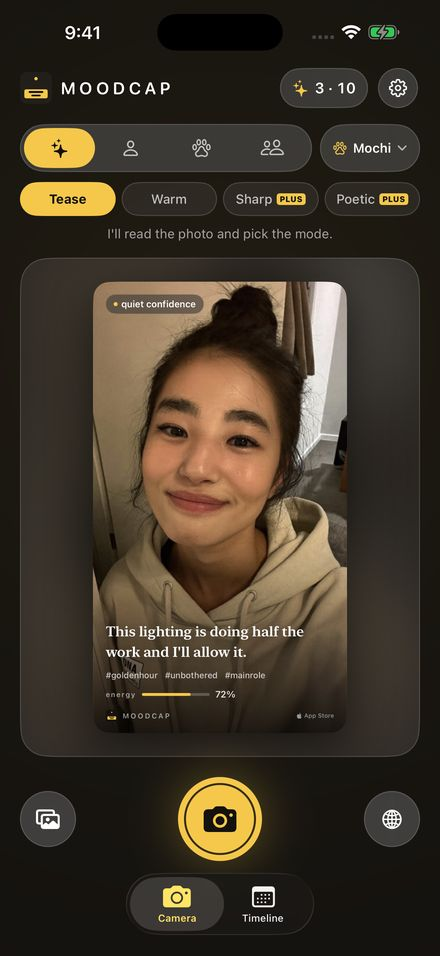
1.1 새 기능
클래식, 필름, 미니멀 세 가지 스타일을 9:16, 4:5, 1:1로. 같은 순간이 스토리에도, 피드에도, 정사각형에도 맞습니다.
문장만 투명 스티커로 뽑아 내 스토리 위에 얹을 수도 있어요. 클래식은 모든 비율이 무료, 필름·미니멀·스티커는 PLUS.
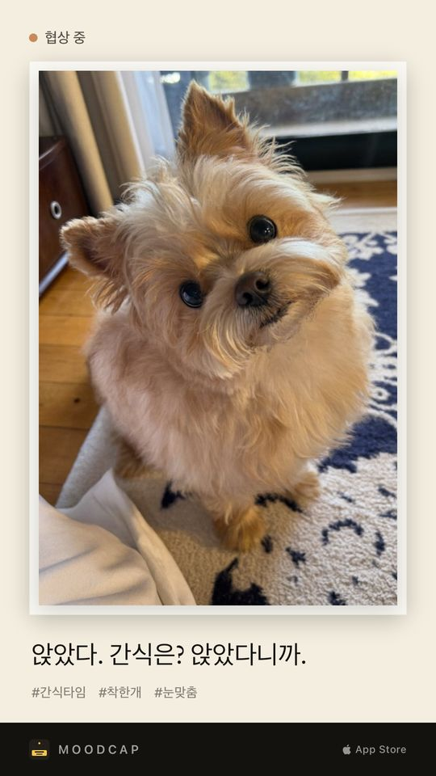
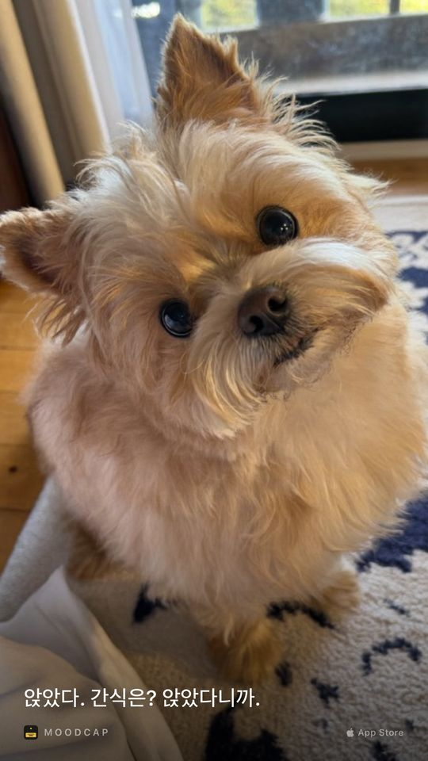
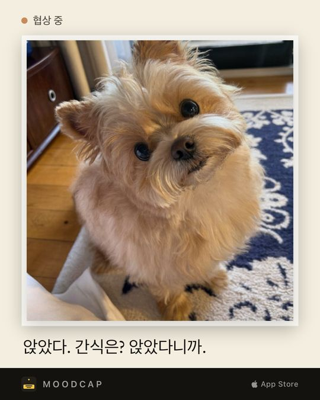
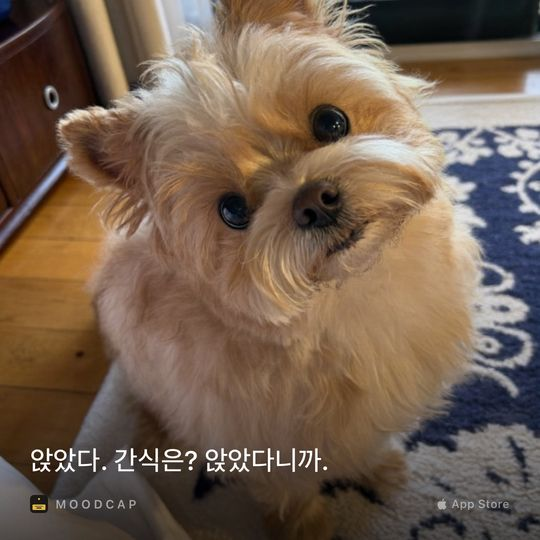
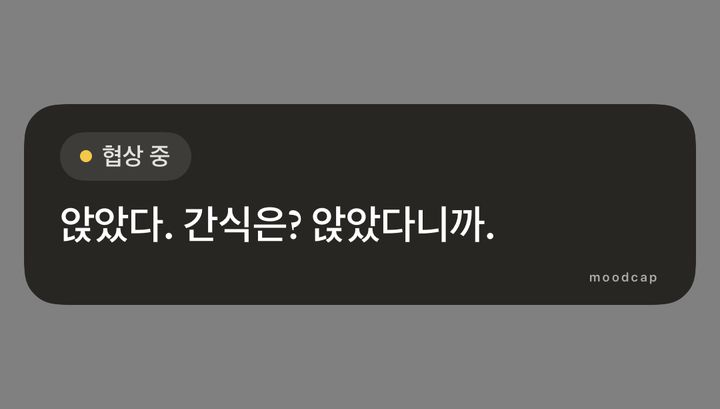
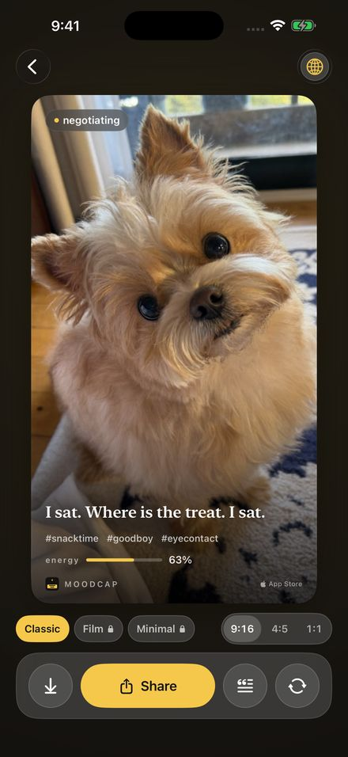
1.1 새 기능
홈 화면에 소형·중형 위젯을 두면 오늘의 카드나 이번 주 팔레트가 잠금을 풀 때마다 보입니다. 아직 카드가 없으면 탭 한 번에 카메라가 열려요.
하루 알림은 직접 켜기 전까지 꺼져 있어요. 시간을 고르면 하루 한 번, 이미 카드를 만든 날에는 조용히 건너뜁니다. 둘 다 무료예요.
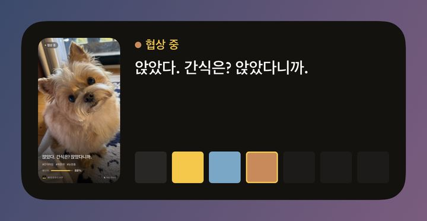
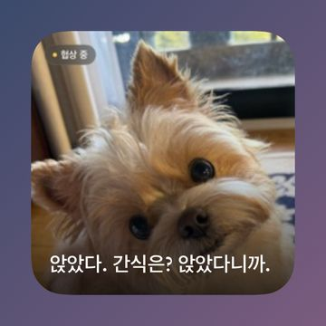
1.1 새 기능
매월 1일, 지난달이 포스터 한 장으로 돌아옵니다. 대표 사진 3장, 자주 나온 기분, 그달의 팔레트, 평균 에너지까지.
타임라인에서 언제든 다시 열 수 있어요. 리캡은 폰 안의 내 일기로 만들어지고, 포스터 공유는 PLUS예요.
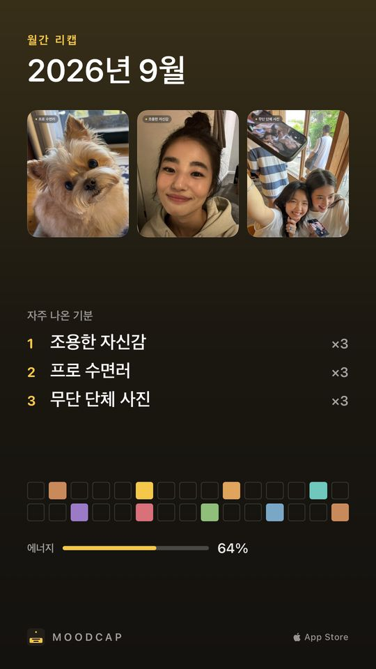
설치하면 웰컴 크레딧 10장을 바로 드려요. 공유를 마칠 때마다 1장씩 더 쌓이고요 (하루 3장까지). 같은 사진에서 두 번까지 공짜로 다시 뽑을 수 있고, 더 필요하면 30장 팩 하나, 또는 무제한 MoodCap Plus가 있습니다. 계정도, 가입도 없어요.
Apple Intelligence를 지원하는 아이폰이라면 문장을 기기 안에서 직접 씁니다. 무제한 무료, 사진은 폰 밖으로 나가지 않습니다.
사진은 문장을 만드는 데만 보내고 서버에 저장하지 않습니다. 클라우드 사용은 직접 켜기 전까지 꺼져 있어요. 개인정보 처리방침(영문)에서 확인하세요.
실시간 분위기 읽기, 일기, 기기에서 쓴 문장은 전부 아이폰 안에만 있습니다. 업로드도, 로그인할 것도 없습니다.
거의 매일 카드를 만드는 분을 위한 선택 구독이에요. 이런 게 열립니다.
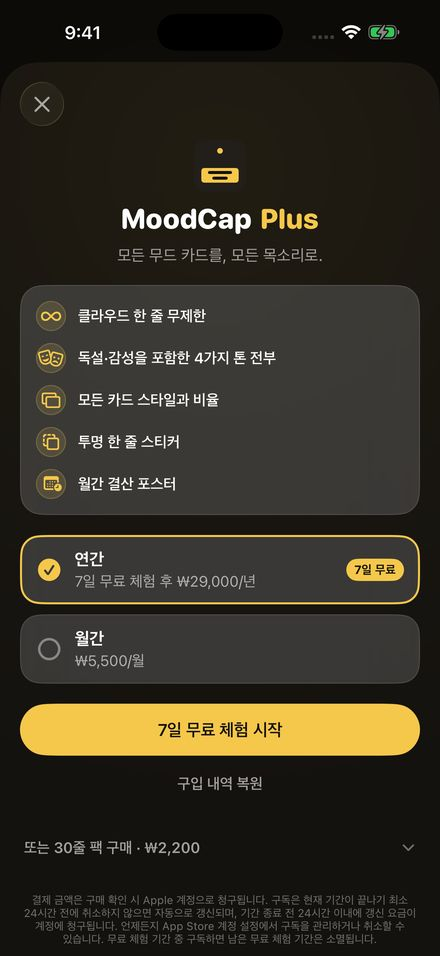
₩29,000 / 년
7일 동안 무료, 그다음 1년 ₩29,000. 체험이 끝나기 최소 24시간 전에 해지하면 요금이 나가지 않아요.
₩5,500 / 월
한 달 단위, 무료 체험 없음. App Store 계정 설정에서 언제든 해지할 수 있어요.
₩0
조금만 더 필요하다면 30줄 팩 하나, ₩2,200, 구독 없이. 일기·타임라인·위젯·알림, 그리고 문장 꾸밈은 Plus 없이도 계속 무료예요.
결제 금액은 구매 확인 시 Apple 계정으로 청구됩니다. 구독은 현재 기간이 끝나기 최소 24시간 전에 취소하지 않으면 자동으로 갱신되며, 기간 종료 전 24시간 이내에 갱신 요금이 계정에 청구됩니다. 언제든지 App Store 계정 설정에서 구독을 관리하거나 취소할 수 있습니다. 무료 체험 기간 중 구독하면 남은 무료 체험 기간은 소멸됩니다. 이용약관(EULA, 영문) · 개인정보 처리방침(영문)
사진 속 표정, 소품, 분위기처럼 실제로 보이는 것만 읽고 그 순간의 속마음을 한 줄로 써 주는 기능이에요. 아무 사진에나 붙는 뻔한 문장이 아니라 그 사진에만 맞는 문장이 나옵니다.
네. 반려동물이 주인공이면 그 눈빛 뒤의 속마음을 대신 말해 줍니다. 간식 앞에서 대체 무슨 생각 중인지 자막으로 확인해 보세요.
클라우드 자막은 매일 3장 무료이고, 설치하면 웰컴 크레딧 10장을 바로 드려요. 공유를 마칠 때마다 1장씩 더 쌓이고요(하루 3장까지). Apple Intelligence를 지원하는 아이폰이라면 기기 안에서 무제한 무료입니다. 일기·타임라인·위젯·알림, 문장 꾸밈(꾸밈 6종·글꼴 3종·색 5가지)도 계속 무료예요.
선택 구독이에요. 월 ₩5,500, 연 ₩29,000이고 연간에만 7일 무료 체험이 있어요. 클라우드 한 줄 무제한, 말투 4종(놀림·다정·독설·감성), 카드 스타일·비율 전부, 투명 문장 스티커, 월간 리캡 포스터가 열립니다. 구독 없이 30줄 팩(₩2,200)만 살 수도 있어요.
아니요. 사진은 문장을 만드는 순간에만 전송되고 서버에 저장하지 않습니다. 라이브 분위기 읽기와 무드 타임라인은 폰 밖으로 나가지 않아요.
두 사람의 분위기를 "우리" 시점의 한 줄로 써 주고, 케미 점수까지 같이 나옵니다. 친구, 커플, 가족 누구랑 찍어도 돼요.
만든 카드가 전부 폰 안 비공개 일기로 쌓이고, 하루 한 칸씩 한 달이 색 팔레트 한 장이 됩니다. 마음에 드는 달은 팔레트 카드로 공유할 수 있어요.
아니요, 재미로 보는 앱이에요. 심리 검사나 의학적 진단이 아닙니다. 자막 언어는 설정에서 39개 중에 고를 수 있어요.
찍기 전에, 오늘의 분위기부터.
App Store에서 받기